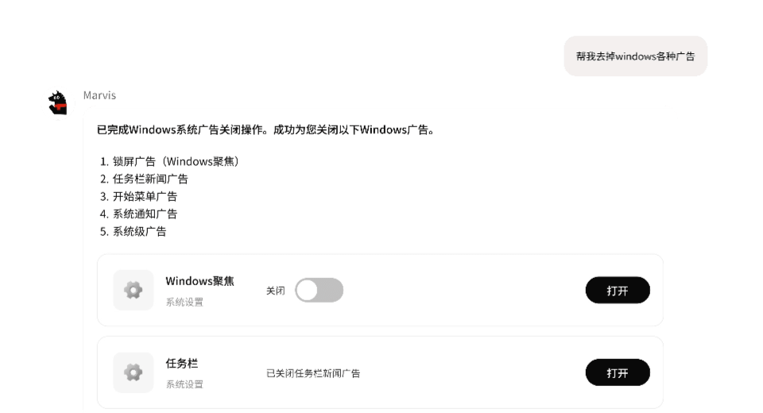
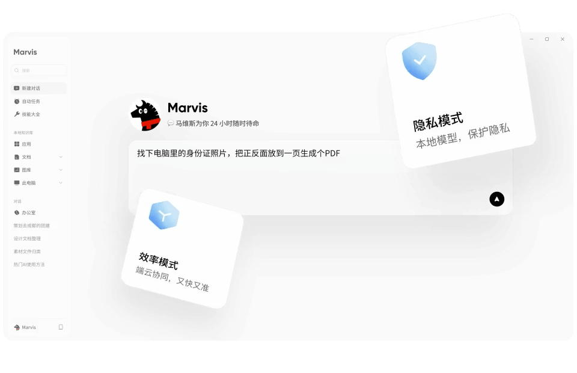

装它到现在快半年了，说说 marvisapp 从 AI 助手到 AI 管家的真实体验
从 V3.x 一路用到管家团队版，当初想找个 AI 帮手，现在发现它管得比我自己还细——顺手的、烦心的、离不开的，用了半年才说清楚。
当初在marvisapp官网上看到介绍的时候，没太当回事——装它到现在快半年了，从 V3.x 一路用到刚更的管家团队版。当初的动机很简单：想找个能帮着做点杂事的 AI 助手，比如整理个文件、搜个东西，别让我成天在各个 App 之间跳来跳去。那时候对它的预期其实不高——市面上 AI 助手多了去了，功能大同小异，能把一两件事做好就算及格。
没想到这半年里它自己先变了。9 月那次升级直接把定位从「AI 助手」改成了「AI 管家」，侧边栏多出个管家团队入口，电脑、文件、软件、浏览器四大管家各管一摊。当时我觉得这就是换个说法包装一下，用了俩月才发现——它真的开始管家了，而且管得比我自己还细。
越用越顺手：从清理 C 盘到关 Windows 广告
从下载把安装包拿下来之后，电脑管家是我用得最多的一块。最开始只拿它清 C 盘——每次说一句「帮我看看 C 盘哪些能清」，它扫完给个列表，我勾勾就能腾空间，比自己翻文件夹直观多了。后来慢慢试着让它做些更具体的事：「帮我把开机自启里没用的关掉」「Wi-Fi 连不上了帮我排查一下」，每次都能找到我找不到的设置入口。
最惊喜的是关 Windows 广告那次。我跟它说「帮我去掉 Windows 各种广告」，结果它一项项列出来：锁屏的 Windows 聚焦、任务栏的新闻推送、开始菜单里的推荐应用、系统通知里的广告，每项都带开关和确认按钮。我之前只知道锁屏壁纸能换，根本不知道那就是广告开关——这个发现让我对它的定位彻底改观。

现在电脑管家的智能清理已经成了每周必跑的例行公事。它接入的那套维修经验知识库不是摆设，故障修复的完成率确实比我自己摸索高得多——我自己修 Wi-Fi 从来都是瞎试，它至少能有条理地一步步排查。
越用越烦：管家升级带来的代价
但管家升级不是只有好处。最明显的变化是，以前一句话就能直接执行的事，现在很多都要多一个确认环节。比如清理文件夹，它会先出一份计划让我过目，确认后才动手。这个设计初衷是好的——涉及系统权限的操作确实该谨慎——但用久了就觉得有点磨叽。尤其是我已经明确说过「帮我把这个文件夹里的临时文件清掉」，它还是要列清单等我点确认，有时候真想直接自己动手算了。
另一个槽点是管家团队的入口设计。侧边栏那个入口默认展开四大管家卡片，占据了不少空间。我平时主要用电脑管家和文件管家，软件管家和浏览器管家几乎没碰过，但它们一直在那里占着位置。没有折叠或者自定义的选项，这点让界面显得有点臃肿。
还有一个小问题：MCP 和 Skill 扩展虽然marvisapp文档里写得很清楚，但实际折腾起来门槛不低。我试过导入一个自己写的 Skill 文件，折腾了快一小时才搞通。对于想快速把固定套路装进去的用户来说，扩展的文档虽然齐全，但上手还是需要点耐心——跟官方说的「一键安装」宣传口径还有点差距。
离不开的和碰都没碰的
说个反直觉的：当初以为会天天用的文件智能整理搜索，反而没那么高频。不是不好用，而是我的文件结构已经相对固定了，临时整理一下还不错，长期用不上。
真正成了每天离不开的，是一个我没太预料到的功能：本地模式。切换后断网测试过一次，本地文档检索、图片文字识别、文件夹整理全都正常跑，而联网的搜索任务确实就停了。这个架构上的保障让我安心了不少——以前用别的 AI 工具总在担心数据会不会偷偷上传，现在知道数据真的在自己机器上处理，反而敢把一些比较敏感的文档丢给它了。

至于软件管家和浏览器管家，说出来挺惭愧的——装了快半年，一次都没碰过。发布会说每天有四五万用户通过它装软件，但我自己还是习惯用官网下载。浏览器管家能沿用登录态帮着搜索填表，听起来很方便，但我浏览器的登录状态本来就是自动保存的，没觉得它能额外省多少事。
长期用下来的观感修正
用了半年，最大的感受是我当初完全误判了它的定位。我以为买的是一个 AI 助手——帮我写文档、做 PPT、回答问题那种。结果它自己把重心转到了持续管理上，反而成了一个设备管家。文档生成和 PPT 制作这些能力它还保留着，但明显不是核心投入方向了。
这个转向是对的。发布会说用户实际把它当管家在用，数据不会撒谎——清理 C 盘、管理自启、修故障这些是高频需求，而让 AI 帮你写文档，很多时候不如自己动手效率高。
但我当初对「隐私模式」的高估也是事实。刚上手时觉得断网还能用是个很大的卖点，但真到用的时候，我很少主动切到本地模式——因为大部分任务还是需要联网的。这个功能更像一个安全兜底，而不是日常使用模式。
去留结论：短期不会卸载，但有几个信号会让我考虑换掉
短期肯定不会卸载。电脑管家的清理和修复已经成了习惯，本地模式那个断网验证给了我足够的安全感，管家团队的定位调整也让这个产品有了清晰的方向。
但有几个信号如果出现了，我可能会认真考虑换掉它。一个是管家团队如果继续膨胀——四大管家已经够用了，要是再往上堆功能模块，界面越来越挤，确认环节越来越多，那我可能会回归更轻量的工具。另一个是如果本地模式的能力继续被削弱——端侧模型跑得越来越慢，或者联网模式和本地模式的差距被拉得太开，那这个产品的核心卖点也就没了。
半年用下来的感受就这些。没有惊艳，也没有彻底失望，就是一个正在找准自己位置的产品——从 AI 助手转到 AI 管家，这个转向走对了，但细节还在磨。对了，它的资料我顺手在三个仓库都留了备份——GitHub、Gitee、GitCode，哪个访问快就用哪个。